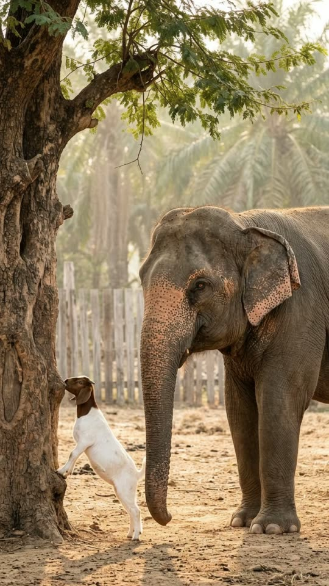
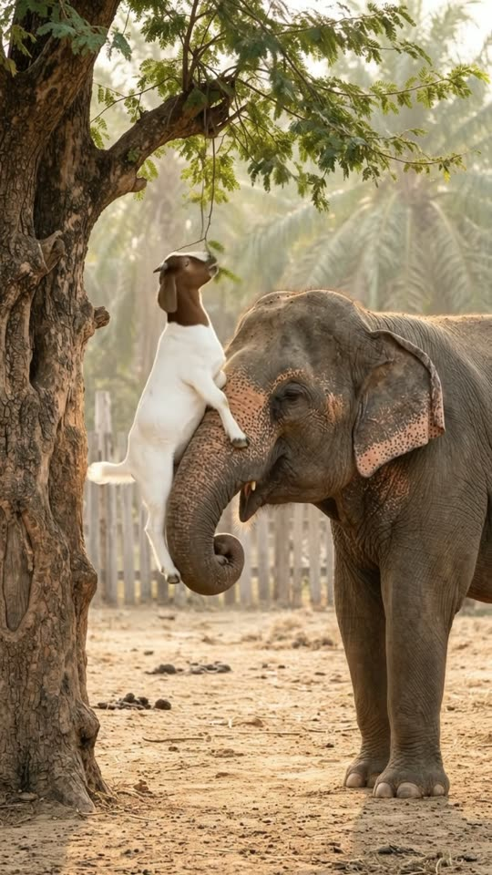
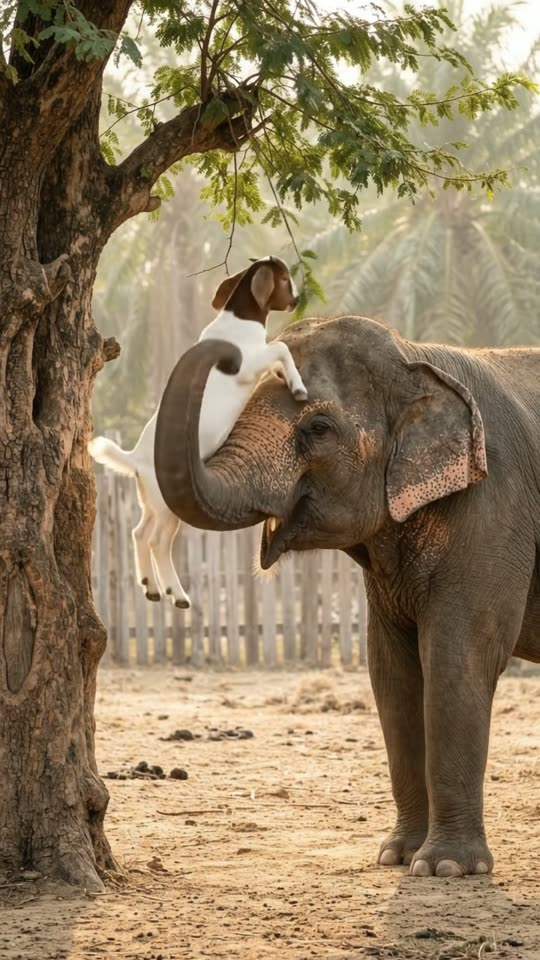
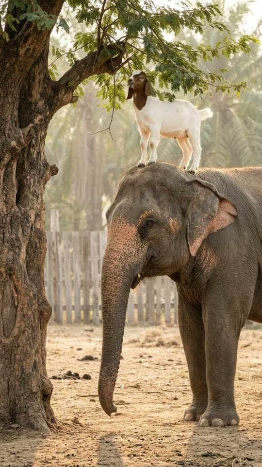

Free prompt pack
The leaves were too high.She had a trunk.
A baby goat stands on his hind legs against a tree, stretching for leaves he can't reach. The elephant next to him wraps her trunk around his belly, lifts him up to breakfast, and then sets him down on top of her head. One still image and one prompt, in one take.
Both prompts, in the order I ran them. Hold to lift the goat with the trunk and let him eat the leaves off each prompt. Let go and she sets him back down. Tap the yard to shake the branch.
The first frame
Leave room for the ending. This image is frame one: a baby goat up on his hind legs against a tamarind tree, an Asian elephant right beside him, and a gap of open air between the top of her head and the leaves.
Watch out
That gap is where the goat ends up standing. My first image had her head right under the branch, so the goat didn't fit up there and the camera moved to make room.

The prompt 147 words
Real long-lens photo in the dusty yard of a Thai elephant sanctuary, warm morning light. On the left, a big tamarind trunk rises the full height of the picture; one leafy branch reaches from it across the top. A small baby goat, white body and brown head, stands on its hind legs against the trunk, front hooves flat on the bark, neck stretched up toward the leaves. On the right, an Asian elephant stands beside the goat, side-on, facing the tree: grey wrinkled skin, pink-freckled trunk and ears, an amber eye, its trunk hanging down next to the goat. The elephant's head sits in the middle of the picture, its feet near the bottom edge, and above its head a clear gap of air, as tall as the goat, before the leaves begin. Dry earth, a wooden fence and palms softly blurred behind. Natural colour, sharp detail.
Reach, lift, breakfast, top
Ten seconds, locked off from the yard. Add the image as the reference, set 10 s, 9:16, 720p and audio on, and paste the prompt whole. This is the second version.
- 0–1.5 scan't reach
- 1.5–3.5 sthe lift
- 3.5–5.5 sbreakfast
- 5.5–7 sonto her head
Watch out
Make something carry every inch. My first try said the goat 'steps onto her head' from a metre below, so he floated up her face. The trunk carrying him all the way, and letting go only when all four hooves are down, fixed it.
Fragments



The prompt 1206 words
FORMAT Real video filmed with a long lens in an elephant sanctuary, seen as the finished exported video file: the full picture edge to edge, nothing on top of it. Whatever records the picture is never in frame. One continuous take in real time, no cuts. Vertical frame. The video runs at 24 fps. No frame is repeated. Real time, 1x speed, never slow motion. SCENE A baby goat stands on its hind legs against a tree, trying to reach leaves far above it. The elephant beside it curls its trunk around the goat's belly and lifts it up in front of its own forehead until the goat can eat. Then the trunk sets the goat down on top of the elephant's head, the way an elephant lifts its keeper, and the goat keeps eating from up there while the elephant rolls its eyes up at it. The goat is already up against the tree in the first frame. The take ends with the goat standing on the elephant's head, chewing leaves. REFERENCE IMAGE Use it for the goat, the elephant, the tree, the leafy branch, the yard and the light, and for where each of them is: the tree and the goat on frame-left, the elephant on frame-right with its head in the middle of the frame, the branch across the top, and the gap of air between the top of the elephant's head and the leaves, exactly as in the image. Everything matches it exactly, zero drift, no smoothing. The movement is described below. THE GOAT One real baby goat, about 45 cm tall: white body, brown head with a white blaze, long floppy ears, tiny horn buds, little dark hooves. It moves like a real young goat: nimble, sure-footed, its jaw chewing sideways, its tail flicking. THE ELEPHANT One real Asian elephant: grey wrinkled skin with pink freckles on its trunk and ears, small ears, a few coarse hairs on its head, an amber eye with long lashes. It stands in the same spot the whole take and its four feet never move; only its trunk, head, ears and eyes move. It moves like a real elephant: slow, careful, precise; its trunk curls and grips gently. LOCATION MAP We are 12 m away, at standing height, looking at them side-on. The big tamarind tree stands on frame-left with the goat up against its trunk. The elephant stands on frame-right, right beside the goat, facing frame-left, its whole body in frame. One leafy branch crosses the top of the frame. Between the top of the elephant's head and the lowest leaves there is a gap of air as tall as the goat: that is where the goat ends up standing. Dry earth below; a wooden fence and palms blurred behind. FIRST FRAME The tree trunk at x 0-15%, y 0-100%; the leaves of the branch across x 0-90%, y 3-22%; the goat on its hind legs at x 12-36%, y 64-94%, front hooves pressed on the bark, neck stretched up; the elephant at x 36-100%, y 36-97%, its head at x 38-80%, y 36-64%, the top of its head at y 36%; its trunk hanging down next to the goat at x 40-54%, y 58-92%; the empty gap of air above the elephant's head at y 22-36%. Instant read: a little goat that can't reach the leaves, and an elephant right next to it. No delayed reveal. CAMERA Locked off: a still frame with only the faintest natural movement of a long lens. It never pans, never tilts, never zooms, never cuts, never moves closer. The tree trunk stays at x 0-15% and the elephant's feet stay at the bottom edge in every frame, from the first to the last. The goat rises inside the frame; the frame never follows it. ACTION TIMING 0–1.5 s — The goat stretches up against the tree on its hind legs, its front hooves pressed on the bark the whole time, mouth reaching for leaves far above it; it bleats; the elephant watches, ears turning. 1.5–3.5 s — The elephant curls the tip of its trunk once around the goat's belly, just behind its front legs, like a sling, and lifts it slowly off the ground, the goat's hind legs dangling. The trunk raises it straight up in front of the elephant's own forehead until the goat is level with the top of the elephant's head and its mouth reaches the lowest leaves. 3.5–5.5 s — Held up in the curl of the trunk, the goat pulls a mouthful of leaves off the branch and chews; the branch bends and springs back. 5.5–7.0 s — The trunk swings the goat slowly back over the elephant's forehead and sets it down on top of the elephant's head, between its ears: first the front hooves, then the hind hooves. Only when all four hooves stand on the head does the trunk uncurl, let go and hang down again. 7.0–10 s — The goat stands on top of the elephant's head at x 48-76%, y 22-36%, and keeps eating from the branch; the elephant rolls its eyes up toward it and flaps its ears once. Hold to the last frame. PHYSICS AND SCALE Real size: the goat is about 45 cm tall and weighs about 10 kg, the elephant about 2.7 m at the shoulder. The goat never rises on its own: every centimetre it goes up, the trunk carries it. At every moment its hooves touch the ground, the bark, the trunk or the elephant's head; it is never in the air, it never jumps, it never climbs the elephant's face. The trunk lifts slowly and steadily, never jerks, never throws it. The branch bends a little as the goat pulls the leaves, and a few leaves fall. One goat, one elephant, one tree. Nothing morphs. NO FULL-FRAME EVENTS Nothing fills the frame: the goat, the elephant, the tree and the branch stay visible in every frame. LIGHTING Warm morning sun from frame-right, low and golden; soft highlights on the elephant's wrinkles and the goat's white coat; dappled leaf shadows on the elephant's head. AUDIO No music, no score, no narration, no subtitles. Sanctuary morning sounds: birds, a light breeze in the leaves, the goat's high bleat, the rustle and snap of the leaves, the goat's chewing, a soft low rumble from the elephant, the soft flap of its ears. No words. LOOK Real documentary footage shot on a long lens, seen as the finished exported file: crisp skin and fur detail, natural colour, no film grain, no lens flare, no slow motion, never CGI, never a cartoon. No camera app interface: no shutter button, no gallery thumbnail, no record button, no icons, no timer, no recording dot, no frame lines. POSITIVE LOCKS One goat, one elephant, one tree, one leafy branch. The elephant's feet never move. The trunk carries the goat all the way up and lets go only when the goat stands on the head. No people. No captions, no subtitles, no on-screen text, no watermark, no logos, nothing on top of the picture. ONE GOAT. ONE ELEPHANT. THE TRUNK LIFTS THE GOAT. THE TREE NEVER LEAVES THE FRAME. NO CUTS. NO ZOOM. NO SLOW MOTION. NO MUSIC.
Rule 01
Big helps small, small takes the best seat
She lifts him to the leaves; he ends up standing on her head. The kindness gets the watch, the cheek gets the share.
Rule 02
Nothing rises on its own
Every inch up needs something carrying it. Say who lifts, how far, and when it lets go, or the model floats it.
Rule 03
Leave room for the ending
If the place where the action ends isn't in the first frame, the camera moves to find it. Put the space in the image.
That's the whole build
Now go givesomeone a lift.
If yours works, send it over. I read every DM and the good ones end up on the account.
@martiiifons